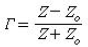
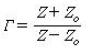
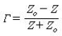
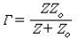
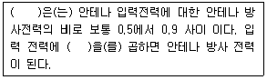
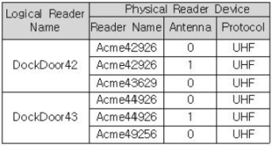
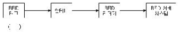
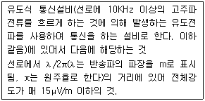

RFID-GL (2009-03-23 기출문제)
1과목: RFID 시스템 개요
1. 다음 중 현재 국내에서 사용되는 RFID 시스템의 주파수 대역이 아닌 것은?
- 125KHz 대역
- 13.56MHz 대역
- 900MHz 대역
- 5.8GHz 대역
(정답률: 81%)

2. 다음 중 RFID에 대한 설명으로 옳지 않은 것은?
- RFID는 무선 주파수를 이용해 사물에 내장된 정보를 근거리에서 읽어내는 기술
- RFID 리더는 태그에서 데이터를 읽기만 가능한 장치
- 일반적으로 RFID 태그는 소형 전차 칩과 안테나로 구성
- RFID는 비접촉식으로 여러 개의 태그를 동시에 인식
(정답률: 73%)
3. 다음 중 RFID 시스템에 대한 설명 중 옳지 않은 것은?
- RFID 시스템은 리더기, 안테나, 태그, 서버 등으로 구성
- 바코드는 그룹 아이디를 가지는 반면, 태그는 고유의 아이디를 가짐
- 태그에 부착된 물건이 종이포장지 내에 들어 있으면 인식이 불가능
- 수동형 태그는 마이크로 칩 형태로 구성되어 있어 반영구적
(정답률: 81%)
4. 다음 리더와 태그의 결합 방식 중 원거리장의 전달에 사용하는 방식은 무엇인가?
- 유도성 결합
- 페라이트를 이용한 유도 결합
- 전류 결합
- 전자파 결합
(정답률: 82%)
2과목: RFID 기술
5. RFID 기술은 크게 물리계층(Physical layer)과 정보기술(Information Technology) 계층으로 구분할 수 있다. 다음 중 RFID 적용 환경에 대한 설명으로 옳은 것은?
- RFID 태그, 리더, 미들웨어는 RFID 구성요소를 말한다.
- RFID 시스템을 운용하는데 발생하는 물리적 문제를 말한다.
- RFID 시스템의 운용에서는 실내, 실외에 관계없이 동일한 적용환경을 가진다.
- RFID 인식영역은 주파수만 관련되어 있으므로 물리적 적용환경과는 관계가 없다.
(정답률: 55%)
6. 다음 중 능동형 태그의 설명으로 옳은 것은?
- 태그와 리더기가 10M 이내의 근거리 통신
- 수동형 태그에 비해 저렴
- 수명이 반영구적으로 사용가능
- 전원의 사용으로 작동시간의 제한을 받음
(정답률: 66%)
7. 다음 인코딩(encoding, 부호화)의 특징을 설명한 것중 옳지 않은 것은?
- NRZ는 맨체스터 방식에 비해 대역폭이 좁다.
- 맨체스터 방식은 DC 성분을 포함하지 않는다.
- 맨체스터 방식은 클록 정보 추출이 불리하다.
- 수동 RFID에서 인코딩은 리더에서 태그로의 전력 전송 측면을 고려해야 한다.
(정답률: 76%)
8. 다음 중 RFID 시스템에서 소프트웨어 구성 요소가 아닌 것은?
- RFID 시스템 소프트웨어
- RFID 미들웨어
- 호스트 애플리케이션
- 스토리지 및 서버
(정답률: 67%)
9. 다음 중 RFID에서 사용하는 신호 단위에 대한 설명으로 옳지 않은 것은?
- 데시벨(decibel)은 두 전류의 비를 말한다.
- 3dB는 2배를 의미하고, -3dB는 0.5배로 신호가 반으로 줄어듦을 의미한다.
- 1W(와트)를 기준전력으로 하는 dB를 dBW라고 한다.
- 회로의 블록이 연속적으로 연결된 경우 입력과 출력에서 신호의 비는 곱셈연산이지만 dB를 사용하면 덧셈연산으로 바뀐다.
(정답률: 68%)
10. 전송선로 특성 임피던스를 Z0라 하고 부하의 임피던스를 Z라고 할 때, 다음 중 전송선로와 부하 사이의 반가값 r에 대한 표현식으로 옳은 것은?




(정답률: 74%)
11. 다음 중 RFID에 적용되는 전자파에 대한 설명으로 옳은 것은?
- 전자파는 전기파로 구성되어 있으며, 자기파는 포함 되지 않는다.
- 전자파는 횡파에 속하며, 전기장과 장기장은 서로 수직을 이룬다.
- 전자파는 높은 주파수에서는 진공 중에도 빛의 속도로 진행하지만, 낮은 주파수에서는 속도가 더 빨라진다.
- 전자파에서 파장과 주파수의 관계는 서로 비례 관게에 놓여 있다.
(정답률: 67%)
12. 다음 중 패러데이 법칙(Faraday's low)에 대한 설명으로 옳은 것은?
- 패러데이 법칙은 전기장의 전속 변화가 자기장을 유도함을 기술하는 법칙이다.
- 전속이란 물질 내에서 자기장의 크기를 다루기 위해 도입된 양이다.
- 도선에 교류 전류가 흐르면 전류로 인해 자기장이 발생하며, 전류의 방향은 자속을 흐름과 동일한 방향으로 발생한다.
- 패러데이 법칙은 전자기 유도 법칙이라고도 한다.
(정답률: 65%)
13. 다음 중 태그 침의 디지털 회로 동작 원리에 관한 설명으로 가장 거리가 먼 것은?
- 리더 명령어에 따라 태그는 준비, 중재, 응답, 승인, 공개, 보안 무력화 7가지 상태를 유지한다.
- 리더의 접근 명령어에는 태그의 메모리 내용을 읽거나 바꾸거나 태그를 무력화 할 때 요청된다.
- 인벤토리 명령어의 Query 명령은 인벤토리 고정에서 사용되는 슬롯의 갯수를 조절하기 위해 사용되는 명령어이다.
- 접금명령어의 Lock 명령은 메모리 뱅크 또는 특정 비밀번호에 대해 잃기 및 쓰기 권한을 설정한다.
(정답률: 62%)
14. Bistatic 안테나의 송수신 격리도(Isolation)는 45dB이다. 송신부에서 0.5W의 신호를 송출하면 수신기에서의 손신 누설 전력(Leakage)는 얼마인가?
- -12dBm
- -15dBm
- -18dBm
- -20dBm
(정답률: 75%)
15. 다음 중 전자파에 대한 물리현상에 대한 설명으로 거리가 가장 먼 것은?
- 전자파의 전달 경로에는 직접 전달 외에 반사, 회절, 산란 등이 있다.
- 반사는 입사 전자파의 파장보다 작은 물체에 파가 입사될 때 발생한다.
- 회절은 모서리에 부딪친 전자파의 일부가 모서리 뒷면으로 전달되는 현상이다.
- 산란은 파장에 비해 매우 작은 구조물로 구성되는 매질을 전자파전파가 통과할 때 발생한다.
(정답률: 52%)
16. 다음 중 반수동형 태그의 구성 요소가 아닌 것은?
- 안테나
- 전지
- 태그 칩(IC)
- 능동형 송신부
(정답률: 65%)
17. 다음 중 태그가 리더로부터 전력을 받고 통신을 하는데 사용하는 주파수 대역이 아닌 것은?
- 저주파(Low Frequency)
- 고주파(High Frequency)
- 초단파(Very High Frequency)
- 극초단파(Ultra High Frequency)
(정답률: 74%)
18. 다음 중 RFID 태그 칩의 구성요소가 아닌 것은?
- 로직 회로
- 태그 안테나
- 메모리 회로
- 아날로그 회로
(정답률: 53%)
19. 증폭기의 이득이 14dB이다. -10dBm의 입력신호에서 1dB의 이득 감소가 발생하였다, 입력 P1dB는 얼마인가?
- -9dBm
- -109dBm
- 109dBm
- 149dBm
(정답률: 45%)
20. 다음 중 리더 시스템의 구성요소가 아닌 것은?
- 태그
- 안테나
- 케이블
- 리더가 장착 되어진 장소의 전파 환경
(정답률: 52%)
21. 다음 중 리더의 수신기 구조에서, 이미지주파수가 없고 부품이 가장 적게 필요로 하는 구조는 무엇인가?
- 헤테로다인
- 이미지 제거구조
- 직접변환구조
- Low-IF 구조
(정답률: 66%)
22. 다음 중 리더와 수동형 태그 사이의 신호전달 과정으로 옳은 것은?
- 리더는 태그에 유선으로 전력을 공급하여 태그를 깨운다.
- 리더는 태그에 명령이 전달되는 과정 이외에는 전력을 공급하지 않는다.
- 리더는 태그로부터 정보를 수신하는 동시에 태그에 전력을 공급하기 위해 진행파(Continuous Wave)를 송신한다.
- 리더는 태그에 전달되는 데이터수신 외에는 다른 일은 하지 않는다.
(정답률: 72%)
23. 다음 중 리더와 안테나 간의 인터페이스를 하나의 안테나를 이용해 사용하는 리더는 무엇인가?
- 독립 리더
- 모노스태틱(Monostatic) 리더
- 바이스태틱(Bistatic) 리더
- 섹터(Sector) 리더
(정답률: 71%)
24. 다음 중 주파수 대역에서 가드밴드(Guard band)의 용도는 무엇인가?
- 인접 채널을 공유하기 위한 주파수 대역
- 태그의 사용 주파수를 막기 위한 대역
- 태그의 사용을 원활하기 위한 태그의 묶음을 위한 대역
- 허용된 대역의 경계에 바로 인접한 채널의 사용을 막기 위한 주파수 대역
(정답률: 57%)
25. 다음 중 열전사(thermal transfer) 프린팅 방식에 사용되는 태그의 설명으로 옳은 것은?
- A4 용지와 같은 낱장 형태의 태그를 사용한다.
- 리본용지와 함께 사용되어야 한다.
- 1440 DPI 이상의 제품이 물류 시스템에 사용될 수 있다.
- 태그에 기록되는 내용은 필수적으로 인쇄되어야 한다.
(정답률: 64%)
26. 다음 중 UHF 대역 RFID 시스템에서 리더의 제한 EIRP는 얼마인가?
- 3dBw
- 4dBw
- 6dBw
- 10dBw
(정답률: 57%)
27. 안테나 임피던스는 무엇으로 정의되는가?
- 안테나 양단의 페이저 (전압/전류)의 비
- 안테나 양단의 순시 (전압/전류)의 비
- 안테나 양단의 페이저 (전류/전압)의 비
- 안테나 양단의 순시 (전류/전압)의 비
(정답률: 60%)
28. 다음의 설명 중 ( )안에 공통적으로 들어갈 단어는 무엇인가?

- 안테나 지향성
- 전력 밀도
- 안테나 편파
- 안테나 효율
(정답률: 65%)
29. 다음과 같이 Logical Reader 'DockDoor42'에 안테나 2개를 가진 새로운 Physical Reader 'Acme43720'이 추가 되었을 경우에 DockDoor42에 속한 Physical Reader 개수는 몇 개 인가?

- 3개
- 4개
- 5개
- 6개
(정답률: 68%)
30. 다음 중 윈도우 환경에서 C 언어용으로 제공되는 RFID Reader API를 사용하는 개발 언어로 사용하기 어려운 것은 무엇인가?
- C++
- Visual Basic
- 자바(Java)
- LISP(List Processing)
(정답률: 56%)
31. 다음 중 소란스러운 저장소에서 이용되는 피드백 장치는 무엇인가?
- 버져(Buzzer)
- 경광등
- 모션센서
- 선별기
(정답률: 70%)
32. 다음 중 RFID Reader API 에서 반드시 제공하지 않아도 되는 기능은 무엇인가?
- 리더 통신 기능
- SMS 문자 전송 기능
- 태그 데이터 읽기 기능
- 태그 데이터 쓰기 기능
(정답률: 70%)
33. 다음 중 표준 RS-232C 통신과 가장 거리가 먼 것은?
- COM1, COM2, COM3 등
- Baud Rate, bps
- Parity Bit, Stop bit
- 통신 전압은 +/- 24V를 사용한다.
(정답률: 68%)
34. 다음 중 RFID 미들웨어의 데이터 필터링 기능이 아닌 것은?
- 중복 인식 데이터 제거
- 부정확한 인식 데이터 교정
- 데이터 암호화
- 데이터 분류
(정답률: 80%)
35. 다음 중 ALE 1.0 표준 규격에서 ALE 서버와 클라이언트간의 ECSpec를 정의하기 위해 명시하고 있는 프로그램 인터페이스는 무엇인가?
- Reading API
- Writing API
- Access Control API
- Tag API
(정답률: 39%)
36. 다음 중 RFID 미들웨어의 도입 효과로 볼 수 없는 것은?
- 자동화된 자동제어 효과
- 기업의 비용절감 및 생산성 향상
- RFID 시스템의 유지보수 용이
- RFID 리더의 효율성 향상
(정답률: 45%)
37. 다음 중 EPCIS의 layer가 아닌 것은?
- 물리 계층(Plysical layer)
- 서비스 계층(Service layer)
- 데이터 계층(Data definition layer)
- 추상화 데이터 모델 계층(Abstract data model layer)
(정답률: 57%)
38. 다음 중 EPCIS의 목적에 해당되지 않는 것은 무엇인가?
- 기업내 또는 기업간의 EPC 데이터 공유
- 기업내 또는 기업간의 ECPglobal 네트워크 공유
- 기업내 또는 기업간의 EPC 데이터 관점의 통일
- 기업내 또는 기업간의 EPC 데이터 표준 이용
(정답률: 57%)
39. 다음 중 EPCIS 3가지 Interface가 아닌 것은?
- ECPIS Accessing Application Interface
- ECPIS Capture Interface
- ECPIS Query Control Interface
- ECPIS Query Callback Interface
(정답률: 63%)
40. 다음 중 RFID 정보서버에 접근하여 객체 정보를 획득하는 개체의 종류는 무엇인가?
- RFID리더, RFID미들웨어
- RFID태그, RFID리더
- RFID태그, RFID안테나
- RFID안테나, RFID미들웨어
(정답률: 55%)
41. RFID 사업 추진시 고려해야할 개인 정보보호 원칙중 '개인정보 기록 금지와 동의 획득 시 기록 목적 등을 미리 고지해야 한다'라는 항목과 가장 밀접한 관련이 있는 단계는 무엇인가?
- RFID 도입단계
- RFID 수집단계
- RFID 연계단계
- RFID 저장단계
(정답률: 67%)
42. 다음 중 미국 Verisign에서 운용하는 EPC코드 디렉토리 시스템을 뜻하는 것은 무엇인가?
- ODS(Object Directory Service)
- ONS(Object Naming Service)
- OIS(Object Information System)
- OTS(Object Traceability System)
(정답률: 58%)
3과목: 정보보호
43. 다음 중 디렉토리 시스템이 아닌 것은?
- ODS(Object Directory Service)
- ONS(Object Naming Service)
- uID Resolution System
- OTS(Object Traceability System)
(정답률: 45%)
44. 초기에는 소매점에서 도입하는 카드를 가지게 하여 고객 쇼핑요금을 할인해주는 시스템이 개인구매, 정보에 연계해 축적할 수 있으므로, 사생활 침해에 해당한다고 주장하는 단체였으나 이후에 IC 태그의 사생활 침해 문제까지 확장하여 활동하고 있는 단체는 무엇인가?
- APEC(Asia-Pacific Economic Cooperation)
- OECD(Organization for Economic Cooperation and Development)
- CASPIAN(Consumer Against Supermarket Privacy Invasion And Numbering)
- EPCglobal
(정답률: 74%)
45. 다음 중 기존 정보시스템에 비해 RFID 정보시스템의 차이점에 대한 설명 중 옳지 않은 것은?
- 정보 접근 매개 요소로 태그식별코드를 사용한다.
- 사용자 변경이 불가능하다.
- 정보생성 주체는 개인이다.
- 정보로는 물품정보, 제조업체 정보, 이력 정보, 실시간 정보 등이 있다.
(정답률: 54%)
46. 다음 중 RFID 관련 프라이버시 보호 가이드라인 주요 내용이 아닌것은?
- RFID와 프라이버시 보호에 관한 소비자 교육 실시
- RFID 폐지에 따른 상실되는 소비자 이익 또는 사회적 이익에 대한 정보 제공
- RFID 내 개인 정보의 멸실, 훼손, 수정 및 누설방지
- RFID 정보와 개인정보가 결합하는 경우 공익을 위한 사회적 정보로 취급
(정답률: 57%)
47. 임의의 리더기가 사용자의 태그로부터 정보를 얻지 못하도록 막는 방법으로 RFID 시스템의 통신 계층에서 수행되는 개별화 프로토콜 단계에서 모든 개별 ID를 흉내냄으로써 리더기가 주변에 떠한 태그도 구별할수 없도록 하는 RFID 보안 기술은 무엇인가?
- 태그 차폐
- 능동형 전파 방해
- 블로커 태그
- 프록싱 접근
(정답률: 60%)
48. 다음 중 모바일 RFID 환경에서 개인화된 태그에 연결된 정보에 대해 개인 프라이버시를 보호하는 기술은 무엇인가?
- 데이터 암호 기술
- 정책기반 프라이버시 보호 기술
- 데이터 통신보안 기술
- 미들웨어 서비스 기술
(정답률: 66%)
49. 다음 RFID 시스템에서 ( ) 부분에서의 침해 공격 기술에 대한 대응 기술이 아닌 것은?(문제 오류로 정답은 2번입니다. 그림파일 원본이 손상되어 있어서 완전히 복구하지 못하였습니다.)

- 패러데이 케이지
- 능동형 전파 방해
- 블로커 태그
- kill(무료화) 기법
(정답률: 64%)
50. 다음 중 주요 프라이버시 위협사항에 대한 설명 중 옳지 않은 것은?
- 감시 위협은 리더에 의해 감시되고 있는 태그의 움직임에 따라 태그의 소유자 또는 사용자의 행동에 감시당하거나 예측당할 수 있는 위협을 나타낸다.
- 관계에 의한 위협은 태그의 소유자의 특정 태그 간의 관계가 노출될 수 있는 위협을 나타낸다.
- 선호도에 의한 위협은 태그 소유자의 선호도, 경향 등이 노출 될 수 있는 위협을 나타낸다.
- 배열에 의한 위협은 특정 태그가 부착된 상품의 이동은 출발지와 도착지 간에 연관성이 있음을 드러내는 위협을 나타낸다.
(정답률: 73%)
51. 다음 중 RFID 시스템에서 도청으로 획득한 정보를 이용하여 정당한 태그로 가장하여 공격하는 방법은 무엇인가?
- 스캐닝
- 트래픽 분석 공격
- 재전송 공격
- 스푸핑 공격
(정답률: 69%)
52. 다음 중 여러 대의 장비 또는 시스템을 이용해 표적 시스템이 처리하지 못할 정도의 엄청난 데이터를 집중적으로 전송하는 공격 방법은 무엇인가?
- 서비스 거부공격(Denial of Service)
- 스니핑(Sniffing)
- 태그복제
- 도청공격
(정답률: 71%)
53. 다읍 중 암호학적 계산에 소요되는 시간이 사용하는 키와 평문의 실제 비트값에 따라서 다양하다는 사실을 이용하여 공격하는 RFID 공격 방식은?
- 단순 전력 분석(SPA : Simple Power Analysis)
- 차분 오류 분석(DFA : Differential Fault Analysis)
- 칩 내부 공격(Chip Rewriting Attack)
- 타이밍 분석 공격(Timing Analysis Attack)
(정답률: 66%)
4과목: 도입절차
54. 다음 중 리더 선정 시 고려해야 할 사항이 아닌 것은?
- 동시에 쓰기 가능한 태그의 개수
- 태그 인식 거리
- 처리 속도
- 다른 종류의 태그 처리 가능 여부
(정답률: 43%)
55. 다음 중 RFID 도입 시 개발 용역 비용이 아닌 것은?
- 소프트웨어 개발 비용
- 시스템 운용 환경 구축 비용
- 데이터베이스 구축 비용
- 실패 시 재구축 비용
(정답률: 57%)
56. 다음 중 RFID를 둘어싼 인프라 설계를 하는 단계는 무엇인가?
- 비즈니스 모델링
- 시스템 기술구조 설계
- 아키텍처 및 디자인
- 요구사항 모델링
(정답률: 71%)
57. 다음 중 RFID 도입시 고려사항으로 태그의 부착 대상물에 따른 고려사항이 아닌 것은?
- 부착면의 재질
- 부착면의 사이즈
- 태그의 용량과 처리속도
- 부착대상의 형태
(정답률: 69%)
58. 다음 중 RFID 태그 데이터를 평활화(Smoothing)하거나, 조정(Coordination) 등의 기능을 수행하는 시스템음 무엇인가?
- RFID Web Service System
- RFID Agent System
- RFID Reader System
- RFID Environment Analysis System
(정답률: 75%)
59. 다음 중 RFID 사용 주파수와 관련된 고려사항이 아닌 것은?
- 해당 개체 정보를 정확히 인식할 수 있는 주파수 대역 선정
- 주파수의 출력 조정
- 부착대상의 물성과 환경에 따른 인식 특성
- 태그에 저장할 코드 용량
(정답률: 61%)
60. RFID 투자 성과 분석의 주요 항목 중 가장 거리가 먼 것은?
- 하드웨어 비용 항목
- 소프트웨어 비용 항목
- 설치 서비스 항목
- 평가 항목
(정답률: 67%)
61. 다음 중 RFID 시스템 도입 시에 특별히 검증하여야 할 검증 항목으로 가장 거리가 먼 것은?
- 태그의 이동 속도와 이동 방법
- 태그 부착 대상별 인식 성능
- 온도 및 기후 변화에 따른 시스템 내구성
- 어플리케이션 시스템의 보안성
(정답률: 54%)
62. 다음 중 13.56MHz RFID와 관련된 규격은 무엇인가?
- ISO/EIC 18000-5
- ISO/EIC 18000-56
- ISO/EIC 15691
- ISO/EIC 14443
(정답률: 63%)
63. RFID 도입을 위해서는 정량 및 정성적 목표를 명확히 설정하는 것이 좋은데, 다음 중 정성적 목표가 아닌 것은?
- 보안
- 고객 편의성
- 위조 방지
- 비용 절감
(정답률: 66%)
64. 다음 중 RFID 도입 추진 3단계에 해당하지 않는 것은 무엇인가?
- 도입을 위한 기본 사항을 확인하고 도입을 결정하는 단계
- RFID 투자 성과를 분석하는 단계
- 적절한 솔루션 및 서비스 사업자를 선정하는 시스템을 구축하는 단계
- 운영 및 유지보수 단계
(정답률: 46%)
5과목: RFID 표준 및 법제도
65. 다음 중 RFID 표준화 조직에 대한 내용으로 가장 거리가 먼 것은?
- 국제 표준화기구인 ISO와 국제전자기술위원회인 IEC에서 진행하고 있는 RFID 기술 표준화 작업은 ISO/IEC JTC1의 SC31 에서 담당하고 있다.
- EPCgolbal은 EAN와 UCC의 기존 이사회 회원을 중심으로 한 이사회를 가장 상위 조직으로 하여, EPCglobal 대표직 및 아키텍처감독위원회와 4개의 분양별 추진위원회를 가지고 있다.
- ISO/IEC JTC1의 SC31은 31번째 위원회로서, 바코드와 자동식별 및 데이터 수집기술을 제외한 나머지 RFID, RuBee, NFC에 대한 표준화 작업을 수행하고 있다.
- RFID 기술에 대한 국제 표준화는 이미 국제표준화기구인 ISO/IEC와 사실상의 표준화 규격을 제시하고 있는 EPCglobal, 두 기관에서 지속적으로 추진하고 있다.
(정답률: 52%)
66. 다음 중 SRD(short Range Device)의 용도로 사용되며 주파수 범위는 25MHz ~ 1000MHz이며 최대 출력 전력은 500mW인 ETSI(European Telecommunications Standard Institute)의 RFID 관련 기술 기준은 무엇인가?
- EN 300 220
- EN 300 330
- EN 300 440
- EN 302 208
(정답률: 62%)
67. 다음 중 RFID 도입을 위한 추진조직의 구성 형태로 옳지 않은 것은?
- 거래처가 주축이 되어 추진
- 자체 IT 조직이 주축이 되어 추진
- SI 업체를 통해 추진
- RFID 컨설팅 회사를 통해 추진
(정답률: 56%)
68. 다음 중 EPC-C1G2 규격과 가장 관련이 깊은 규격은 무엇인가?
- ISO/IEC 18000-6A
- ISO/IEC 18000-6B
- ISO/IEC 18000-6C
- ISO/IEC 14443
(정답률: 53%)
69. 다음은 일본의 RFID에 관련된 법 규정 "전파법시행규칙 제44조" 제 2항 유도식 통신 설비에 대한 설명이다. 다음 법 규정의 RFID 주파수 대역은 무엇인가?

- 135KHz 대역
- 433MHz 대역
- 860~960MHz 대역
- 2.4GHz 대역
(정답률: 42%)
70. 다음 중 RFID 주파수별 최대 공중선 전력(EIRP)이 바르게 짝지어져 있는 것은 무엇인가?
- 72dB uA/m - 135KHz
- 6.5 dBm - 433 MHz
- 7.5 A/m - 13.56MHz
- 4W 이하 - 860~960 MHz
(정답률: 59%)
71. 다음 중 EPCglobal에서 제안한 EPC 코드체계에 포함되지 않는 것은 무엇인가?
- 헤더(Header)
- 업체코드
- 일련번호
- 태그속성
(정답률: 65%)
72. 다음 중 수분, 직물 등 비금속 장애물의 투과성이 우수하고 데이터 전송상의 신뢰성이 높으나 음영 지역 문제가 있고, 판독 속도가 낮은 RFID 주파수 대역은 무엇인가?
- 13.56MHz
- 2.45GHz
- 433MHz
- 860~960MHz
(정답률: 61%)
73. 다음 중 고속 전송과 태그 소형화가 가능하며 긴 인식 거리에서 다중 태그 인식이 가능하나 인접 주파수에 다양한 주파수가 사용되며 나라마다 전파 규제가 다른 단점이 있는 RFID 주파수 대역은 무엇인가?
- 2.45GHz
- 13.56\MHz
- 860~960MHz
- 450KHz 이하
(정답률: 72%)
74. 다음 중 EPCglobal의 소프트웨어 액션그룹에 속하는 워킹 그룹은 무엇인가?
- UHF Gen2 Protocol WG
- Testing & Certification WG
- Reader Protocol WG
- Impoet/Export Customs Clearance WG
(정답률: 60%)
75. 다음 중 B2B 서비스 유형에 대한 설명으로 옳은 것은?
- B2B 서비스를 위해서는 휴대현 RFID 리더가 필수적으로 필요하다.
- 극장, 음식정, 상가 등이 밀집된 지역의 중/소 사업자가 서비스 제공 대상이 될 가능성이 높은 모델이다.
- RFID 리더기 탑재 휴대폰이 보편적으로 사용되는 모델이다.
- 물류/유통업체 위주의 서비스 모델이다.
(정답률: 58%)
76. 다음 중 RFID 태그의 UII(Unique Item Identifier) 영역 중 RFID 태그가 사용되는 응용 분야 또는 데이터 정보 종류를 판별하기 위해 사용되는 ID 값은 무엇인가?
- AFI(Application Family Identifier)
- DSFID(Data Storage Format Identifier)
- Object
- TID(Tag Identifier)
(정답률: 25%)
77. 다음 중 모바일 RFID에 관한 설명 중 사실과 가장 거리가 먼 것은?
- 900MHz 기반의 모바일 RFID를 세계 최초로 한국에서 개발하였다.
- 국내 모바일 RFID 표준화 관련 조직으로 한국 RFID/USN협회 산하의 모바일 RFID포럼이 있다.
- 900MHz 모바일 RFID 기술은 B2B, B2C, B2B2C 영역에서 사용된다.
- 국내에서 추진 중인 모바일 RFID와 유사한 기능을 수행하는 대안 기술로 FFC(Far Field Communication) 방식이 있다.
(정답률: 57%)
78. 다음 중 ODS의 기능으로 옳은 것은?
- RFID 태그가 부착된 객체의 콘텐츠 서버 위치정보(URL, IP)를 알려주는 시스템
- RFID 태그 정보를 읽어 휴대폰에 전송하느 기능을 수행하는 시스템
- ODS는 모바일 RFID 서비스 콘텐츠를 저장하고 있는 시스템
- ODS의 National ODS과의 연동은 모바일 RFID 서비스 기본 구성요건에 해당
(정답률: 48%)
79. 다음 중 ISO/IEC 15963 정의 코드에 대한 설명으로 가장 거리가 먼 것은?
- 칩(IC) 제작 시에 부여받는 코드로서 태그 자체의 식별을 위한 번호 체계이다.
- 가상(Vitrual) ID와 영구(Permanent) Unique ID 번호 체계가 정의되어 있다.
- 태그가 부착된 객체의 실별이 아닌, 태그 간의 유일한 실별에 사용된다.
- 동물 코드 구조에 대하여 정의하고 있다.
(정답률: 60%)
80. 다음 중 조직이 소유하고 있으면서 매매하지 않는 자산을 식별하는 데 사용하는 EPC 코드 체계는 무엇인가?
- GIAI(Global Individual Asset Idenfifier)
- GRAI(Golbal Returnable Asset Identifier)
- GID(General Identifier)
- SGLN(Serialized Global Location Number)
(정답률: 52%)
설명: 현재 국내에서 사용되는 RFID 시스템의 주파수 대역은 125KHz, 13.56MHz, 900MHz이다. 5.8GHz 대역은 주로 무선 인터넷이나 무선 영상 전송 등에 사용되는 주파수 대역으로, RFID 시스템에서는 사용되지 않는다.